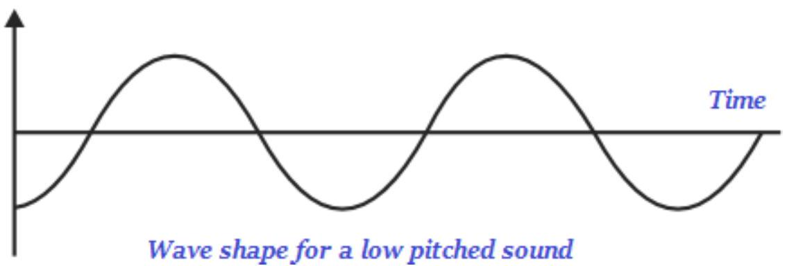

CHAPTER 3
SOUND
3.1 Introduction
- Sound is a form of energy, which produces a sensation when we hear it in our ears
- Sound can be produce in number of ways, such as, by plucking, scratching, rubbing, blowing or shaking different objects
- Sound sources are broadly divided into two types namely, natural and man-made.
- Depending on the amount of human intervention, the sound is broadly categorized into these two categories.
- Acoustic instruments :(Guitar, Sitar, Veena), wind (Flute, Shehnai) or percussive (Drums) instruments.
- Electrical instruments use electricity to produce sound.
- Man made voices and voices made by man-made products also produce sound.
- The sound of the human voice is produced because of the vibrations in the vocal cords.
Sound waves are typically characterized by the motion/vibration of particles in the medium and hence known as Waves
Sound waves fall into three categories: longitudinal waves, mechanical waves, and pressure waves. Keep reading to find out what qualifies them as such.
a) Longitudinal Sound Waves
A longitudinal wave is a wave in which the motion of the medium's particles is parallel to the direction of the energy transport. Sound waves in air and fluids are longitudinal waves, because the particles that transport the sound vibrate parallel to the direction of the sound wave's travel. If you push a slinky back and forth, the coils move in a parallel fashion (back and forth). Similarly, when a tuning fork is struck, the direction of the sound wave is parallel to the motion of the air particles.
b) Mechanical Sound Waves
A mechanical wave is a wave that depends on the oscillation of matter, meaning that it transfers energy through a medium to propagate. These waves require an initial energy input that then travels through the medium until the initial energy is effectively
transferred. Examples of mechanical waves in nature include water waves, sound waves, seismic waves and internal water waves, which occur due to density differences in a body of water. There are three types of mechanical waves: transverse waves, longitudinal waves, and surface waves.
Why is sound a mechanical wave? Sound waves move through air by displacing air particles in a chain reaction. As one particle is displaced from its equilibrium position, it pushes or pulls on neighboring molecules, causing them to be displaced from their equilibrium. As particles continue to displace one another with mechanical vibrations, the disturbance is transported throughout the medium.
LONGITUDINAL WAVES
TRANSVERSE WAVES
c) Pressure Sound Waves
A pressure wave, or compression wave, has a regular pattern of high- and low-pressure regions. Because sound waves consist of compressions and rarefactions, their regions fluctuate between low and high-pressure patterns. For this reason, sound waves are considered to be pressure waves. For example, as the human ear receives sound waves
from the surrounding environment, it detects rarefactions as low-pressure periods and compressions as high-pressure periods.
d) Transverse Waves
Transverse waves move with oscillations that are perpendicular to the direction of the wave. Sound waves are not transverse waves because their oscillations are parallel to the direction of the energy transport; however sound waves can become transverse waves under very specific circumstances. Transverse waves, or shear waves, travel at slower speeds than longitudinal waves, and transverse sound waves can only be created in solids.
3.2 Characteristics of sound wave
- Wavelength
- Amplitude
- Time-period
- Frequency
- Velocity (or Speed)
a) Wavelength
- Wavelength is the minimum distance in which a sound wave repeats itself.
- The SI unit for measuring wavelength is metre (m).
b) Amplitude (a)
- Amplitude of the wave is the magnitude of the maximum disturbance in the medium on either side of the mean value
c) Time-period (t)
- The time required to produce one complete wave (or cycle) is called time-period of the wave.
- The time taken for one complete oscillation is called the time period of the sound wave.
- Its SI unit is second (s).
d) Frequency
- The number of complete waves (or cycles) produced in one second is called frequency of the wave.
- The number of such oscillations per unit time is the frequency of the sound wave.
- The SI unit of frequency is hertz (which is written Hz ).
- The frequency of a wave is the reciprocal of its time-period.
Frequency = 1Time period
$\mathrm{F}=1 \mathrm{~T}$
- The faster an object vibrates, i.e. the higher the frequency, the higher the pitch of the sound.
3.3 Speed of sound
Speed of sound depends on THREE FACTORS
- Nature of Material/ Medium
- Temperature
- Humidity of Air
a) Nature of material/medium:
- .The speed of sound depends on the nature of material (or medium) through which it travels.
- Sound travels faster in liquids than in gases and faster in solids than in liquids
- Sound travels about 5 times faster in water than in air.
- Speed of Sound in Air: The speed of sound when travelling through air at $20^{\circ} \mathrm{C}$ is $343.2 \mathrm{~m} / \mathrm{s}$ which is equal to $1,236 \mathrm{~km} / \mathrm{h}$.
- Speed of Sound in Gases:
- The speed of sound in gases is proportional to the square root of the absolute temperature (measured in Kelvin)
- The speed of sound is independent of the frequency of the sound wave or the pressure and the density of the medium.
- However, the properties slightly change because none of the gases we find in real life are ideal gases.
b) Temperature:
- The speed of sound increases with the rise in temperature.
- The speed of sound in air room temperature is 344 metres per second (which is written as $344 \mathrm{~m} / \mathrm{s}$ ). This means that sound travels a distance of 344 metres in 1 second through air at the room temperature.
c) Humidity of the air:
- Speed of sound increases with the rise in humidity.
- The substance or object through which sound is transmitted is known as medium.
- Sound moves through a medium from the point of the generation to the listener; the sound medium could be solid, liquid, or gas.
- However, sound cannot travel through a vacuum medium.
- The particles of gas, liquid, or solid of gas, liquid, or solid do not travel all the way from the vibrating object to the ear, but rather when the object vibrates, it sets the particles of the medium around it vibrating and so on and so forth
- In other words, the particles of the medium do not travel/move forward, but rather the disturbance is carried forward through one vibrating particle to another.
- When vibrating particles move forward, they push and compress the air in front of it and create a region of high pressure known as compression see the image given below
- Further, when the vibrating particles move backwards, it creates a region of low pressure known as rarefaction RR see the image given above
- As the particles move back and forth rapidly, a series of compressions high pressure zone high pressure zone and rarefactions low pressure zone low pressure zone is created in the air; likewise, the sound wave propagates through the medium.
- As shown in the image given above, the lower portion valley of the curve is known as trough and the upper portion peak is known as crest.
- The distance between two consecutive compressions or two consecutive rarefactions is known as the wavelength.
- Wavelength is usually represented by the Greek letter lambda ( $\lambda$ ) and its SI unit is meter mm .
- The number of the compressions or rarefactions that counted per unit time is known as frequency of the sound wave.
- Frequency of the sound wave is commonly represented by v Greek letter, nu Greek letter, nu.
- The SI unit of frequency of the sound wave is hertz Hz.
- The sensation of a frequency that we sense/listen is usually referred as the pitch of a sound.
- The faster the vibration of the sound source, the higher is the frequency and so the higher is the pitch see the image given below
Wave shape for a high pitched sound
- Likewise, a high pitch sound has more number of compressions and rarefactions passing the fixed point per unit time.
- The lower the vibration of the sound source, the lesser is the frequency and so the lesser is the pitch see the image given below
Wave Disturbance
- Likewise, a lower pitch sound has less number of compressions and rarefactions passing the fixed point per unit time.
- The magnitude of the maximum disturbance in the given medium on either side of the mean value is known as the amplitude of the sound wave.
- Amplitude is commonly represented by the letter A.
- The softness or loudness of a sound is fundamentally determined by its amplitude.
- A sound of single frequency is known as tone.
- The sound, which is created by mixing of several harmonious frequencies, is known as note.
- Note is pleasant in listening.
Example
A student standing between two walls shouts once. He hears the first echo after 3 seconds and the next after 5 seconds. Calculate the distance between the walls.
Solution
It took $t_{1}=1.5 \mathrm{~s}$ for the sound to reach the 1 st wall and at the same time time, the same sound took $t_{2}=2.5 \mathrm{~s}$ to reach the 2 nd wall. Assuming that the sound travels at $343 \mathrm{~m} / \mathrm{s}$, then let $x_{1}$ be the distance of the person to the 1 st wall and $x_{2}$ be the distance to the 2 nd wall. So the distance between the walls X is
$X=x_{1}+x_{2}=v_{s} t_{1}+v_{s} t_{2}=v_{s}\left(t_{1}+t_{2}\right)$
$=(343 \mathrm{~m} / \mathrm{s})(4.0 \mathrm{~s})=1372 \mathrm{~m}$
Example 2
A mine-worker stands between two vertical cliffs 400 m from the nearest cliff. The cliffs are x distance apart. Every time he strikes the rock once, he hears two echoes; the first one after 2.5 seconds, while the second follows 2 seconds later. From this information, calculate
a. The speed of the sound in air.
b. The value of x .
Solution
1. s
$=\underline{2 \mathrm{~d}}$
t
$=\underline{2} \quad \mathrm{x} \quad 400$
2. $(2.5 +2)s \mathrm{x}=1120 \mathrm{~m}$
3.4 Controlling Noise in construction sites
- Eliminate Noise During Design. One of the best ways to reduce noise exposure is to consider noise in the project design phase. This can be done by choosing equipment that reduces the noise level and by eliminating design flaws that can amplify noise
- Add Noise Barriers. They block the direct path of sound waves from the source of noise, protecting workers and the community from noise exposure.
- Use Sound-Absorbing Materials. Sound-absorbing materials can be helpful in reducing construction noise. Materials such as metal, wood and concrete are sound-reflective materials that sound waves bounce off.
- Choose Less Noisy Equipment. There's no getting around the fact that construction equipment can be loud, but there are ways to choose equipment that is quieter.
- Optimize Your Current Equipment. If you're looking for ways to reduce the noise levels of your current equipment, there are a few modifications to consider. A popular option is to use acoustical silencers in intake and exhaust systems, such as internal combustion exhaust systems or air conditioning systems.
- Ensure Proper Saw Cutter Practices. One of the louder pieces of equipment on a construction site is often the concrete saw. You can reduce noise caused by a concrete saw by choosing a blade with the largest number of teeth and a smell width between teeth and choosing a blade with the smallest possible gullets.
- Offer Personal Hearing Protection for Workers. Protect your workers from the effects of excessive noise by offering them hearing protection devices. There are several methods to determine the noise level on a job site.